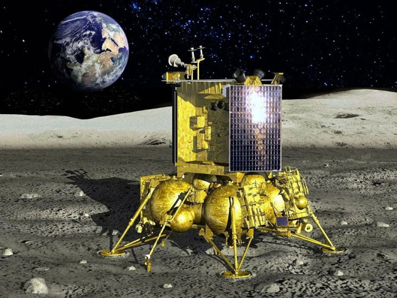
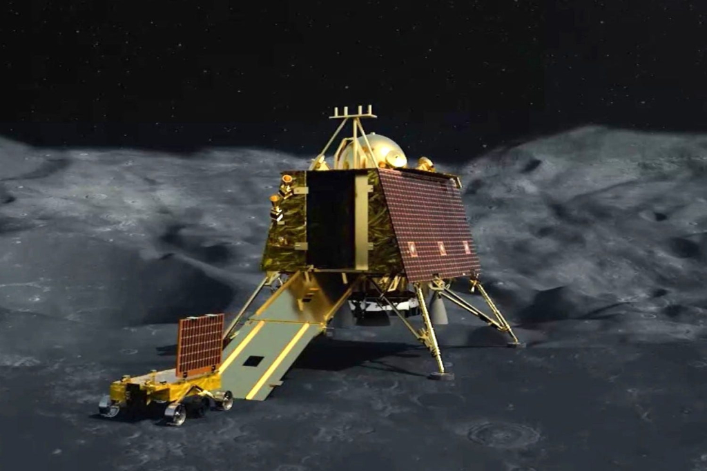

Целью миссии Artemis 1 является демонстрация работы интегрированных систем, а также тестирование системы тепловой защиты «Орион»
при вхождении в плотные слои атмосферы на высокой скорости.
Ход операции
В ходе миссии аппарат “Орион” достиг максимального удаления от земли во время миссии, вышел на окололунную орбиту и сошел с нее.
Миссия была успешно завершена приземлением аппарата в тихом океане.
Луна-25

11 августа 2023 - запуск автоматической межпланетной станции Луна-25.
Задачи
Поиск воды и летучих соединений в лунном полярном веществе.
Изучение элементного и изотопного состава поверхности и верхнего слоя полярного реголита.
Исследование плазменного и пылевого компонента лунной экзосферы.
Ход операции
Планировалось отправить аппарат в полярный район Луны.
19 августа 2023 года - в ходе выполнения маневра выхода на предпосадочную орбиту к Луне, произошла нештатная ситуация, которая позже привела к крушению станции на поверхность Луны.
Чандраян-3

14 июля 2023 - запуск индийского аппарата Чандраян-3 к луне.
Задачи
Измерение температуры лунного грунта.
Спектральный анализ материала лунной поверхности.
Измерение плотности окололунной плазмы.
Ход операции
На борту посадочного модуля находится оборудование для проведения сейсмических исследований, изучения лунной поверхности и грунта. Предполагалось,
что зонд проведет в районе Южного полюса один лунный день, то есть 14 земных суток. За время операции все задачи были выполнены.